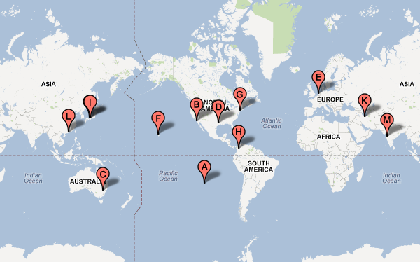
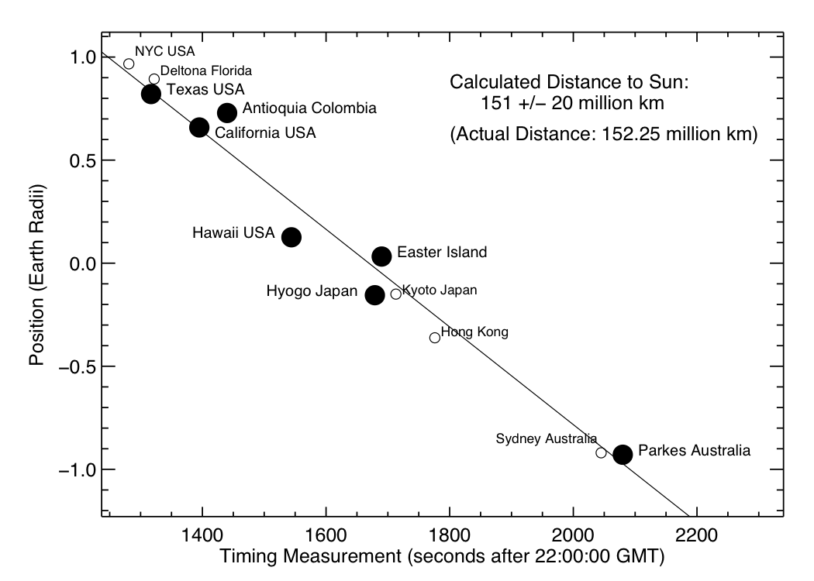

Calculando la Distancia al Sol
Iorana niños de Rapa Nui!
Les habla tio David y tia Jackie del Equipo Hetu'u. Se recuerdan de nosotros? Es hora de calcular la distancia al Sol usando sus medidas del tránsito de Venus!
Como saben, estuvimos en Ahu Tahai el martes 5 de junio de 2012 para observar el tránsito de Venus. El equipo estaba divido en varios grupos y cada uno tuvo una medida levemente distinta de cuando ocurrió el segundo contacto del tránsito. Usaremos la mejor medida tomada por el grupo del tio Pancho y las tias Helene y Milena: 16:28:10. El tiempo esperado se supone que haya sido solo 8 segundos más tarde, asi que bien hecho!
Para medir la distancia tenemos que comparar con el tiempo medido por otros estudiantes alrededor del mundo. Aquí hay un mapa del equipo entero al cual ustedes se estan uniendo:

¿Como podemos calcular la distancia?
Fácil! Solo hay que hacer un poco de matemáticas. Las instrucciones se encuentran en este archivo PDF en Español y en esta página web en Inglés.
¿Ya leyeron las instrucciones? Bien! Ahora nesecitamos los valores. Aquí esta listado los grupos con coordinadas y su tiempo de segundo contacto (en tiempo universal):
| Lugar | Latitude | Longitude | Tiempo de Contacto |
|---|---|---|---|
| Isla de Pascua | -27.1557 | -109.42932 | 22:28:10 |
| Paia, Hawaii | 20.91652 | -156.38470 | 22:25:44 |
| Hyogo, Japón | 34.79956 | 134.84175 | 22:27:59 |
| Los Angeles, California | 34.07220 | -118.44315 | 22:23:15 |
| Parkes, Australia | -33.12639 | 148.17417 | 22:34:40 |
| Huntsville, Texas | 30.71314 | -95.54818 | 22:21:57 |
| Antioquia, Colombia | 8.62083 | -79.93667 | 22:24:00 |
Su tarea es calcular el valor 'x' para cada lugar usando sus coordinadas y comparar los tiempos por cada valor x. Como la hora es la misma (las 22 horas, que corresponde a las 4 de la tarde en Isla de Pascua), se puede ignorar la hora pero necesitamos usar los minutos y segundos.
Hay dos maneras de comparar la data: pueden usar cualquier par de lugares (también se puede repetir para todos los pares y luego tomar el promedio) o usar todos los lugares a la vez y calcular la pendiente de la linea que atraviesa los datos en un gráfico de 'x' contra 't'.
Nosotros hemos calculado el valor final y obtenemos un resultado de 151 millones de kilómetros para la distancia al Sol (un error estimado de 20 millones de kilómetros). Abajo esta nuestra grafica de los valores. El valor actual es de 152 millones de kilómetros (la distancia entre la Tierra y el Sol varia a traves del año y en promedio es 150 millones de kilómetros). Muy bien hecho!
